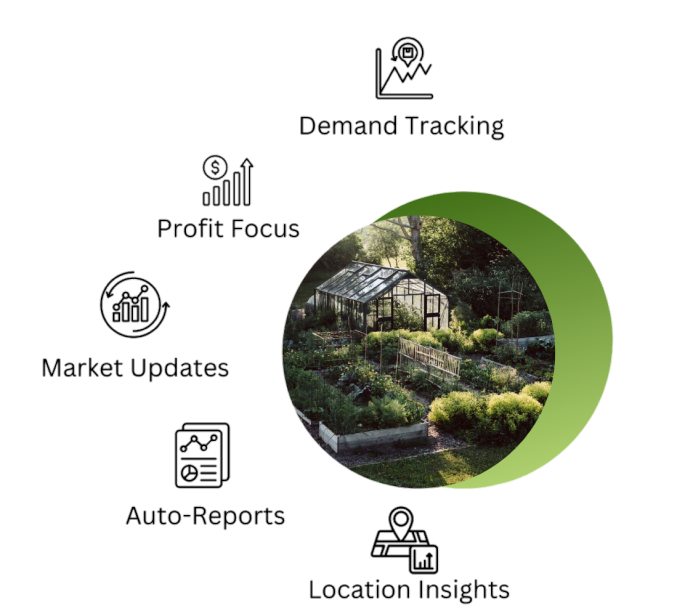

Local
Demand Tracking
- Monitors real-time demand for crops to help align production with market needs.
Profit Focus
- Analyzes costs and revenue to maximize profitability for farmers and businesses.
Market Updates
- Provides timely updates on market trends, pricing, and competitor activity.
Auto-Reports
- Automatically generates detailed performance and productivity reports for decision-making.
Location Insights
- Delivers tailored recommendations based on geographic conditions and regional data.
